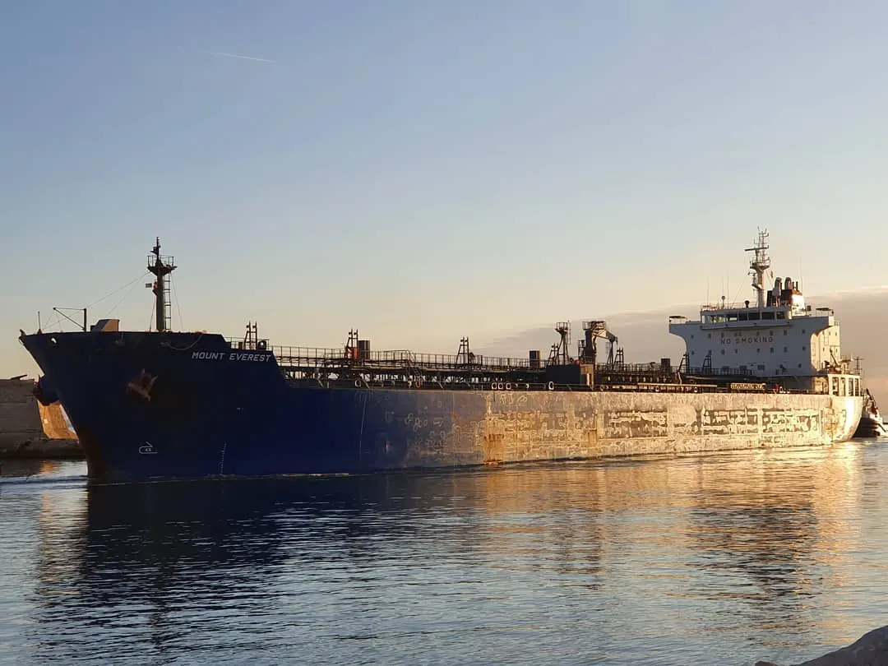

Brent oil dips below $90 as US signals restraint on further Iran strikes
The benchmark touched its lowest level since August on Tuesday, but the Strait of Hormuz blockade and lack of a deal leave supply risks unresolved.

What happened
Brent crude briefly fell below US$90 a barrel on Tuesday, November 10, 2026, for the first time since August, according to market reporting by Reuters, the Financial Times and The Guardian. The international benchmark touched approximately US$89.16 during trading before recovering some losses; quotes varied by reporting time. Prices declined after US President Donald Trump indicated that further strikes against Iran were unlikely for now. Reduced fears of military escalation lowered the geopolitical risk premium, while traders monitored Middle Eastern production flows and diplomatic contacts. Washington's continuing naval blockade and instability in the Strait of Hormuz, a major route for oil shipments, mean that supply normalization remains uncertain.
The Crow's analysis
Lower crude prices can ease energy and transportation costs and some inflation pressures, but they do not guarantee matching cuts at the pump. Exchange rates, taxes, refining, distribution and domestic pricing decisions shape retail costs. The sharp moves show how sensitive oil markets remain to Washington's statements and threats to maritime traffic. In Brazil, a sustained decline in global prices could ease import costs, although the real-dollar exchange rate and decisions by fuel suppliers also matter. Intraday prices should not be presented as final settlement figures.
Counterpoint
A lower likelihood of renewed strikes is not a ceasefire or a US-Iran agreement. Analysts cited by financial media warn that safe shipping through the Strait of Hormuz is not yet assured, and fresh military tensions could quickly reverse the decline. The quoted prices reflect different points during November 10 trading rather than a consolidated closing price.